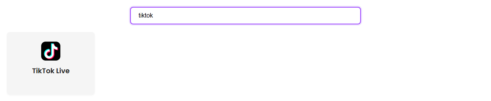

Use this first when you just need TikTok Live chat working.
Open the Supported Sites page and search for TikTok. This confirms the basic setup rule before you start changing OBS.

For the browser extension, open the creator's live page and keep the chat visible.
https://www.tiktok.com/@CHANNEL/live

If browser tabs keep pausing or hiding chat, try the desktop app path instead.
Pick one short session ID. Use that exact same ID in the TikTok source, the dock, and OBS.
YOUR_SESSION_ID
Open the dock with your session ID. Send or wait for one TikTok chat message.
https://socialstream.ninja/dock.html?session=YOUR_SESSION_ID

Add a Browser Source in OBS and use the same session ID.
https://socialstream.ninja/featured.html?session=YOUR_SESSION_ID

Template setup: Overlay Template Quick Start.
More detail: Full TikTok Guide.